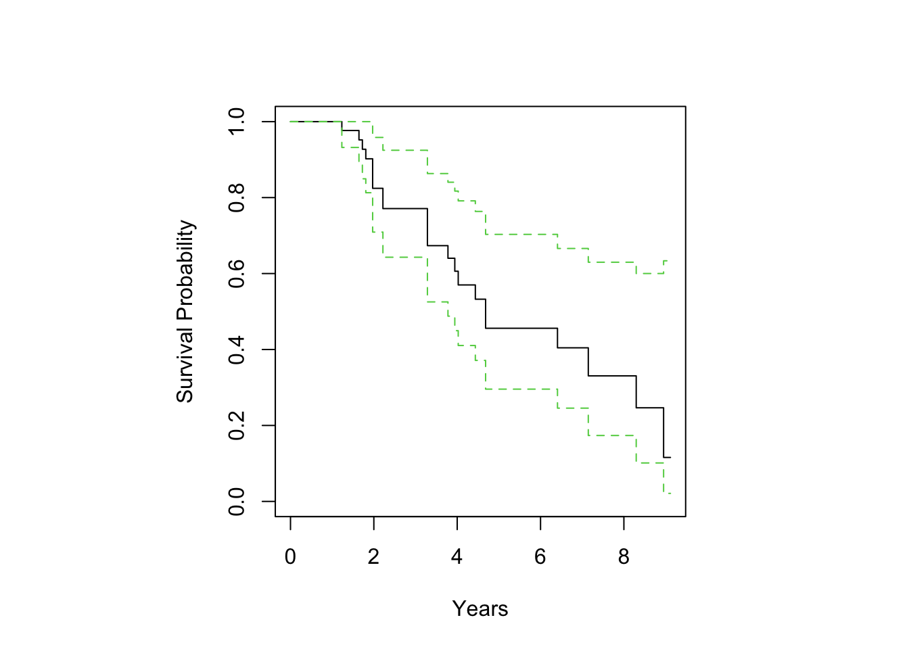

We will now look at time-to-event outcomes. In many clinical applications, the researcher will have access to both whether or not an event occurred, but the also the event occurred. Only considering one of the two pieces of information will result in an either incomplete or incorrect analysis of a problem of interest. Being able to use both types of data results in better inferences.
Censored Data
An important new concept in this lecture is that of censored data. For example, the ovarian cancer studies considered in curatedOvarianData, inluding Yoshihara B, only followed patient for a limited period of time. As a result, the time elapsed between diagnosis and death (survival time) is known for some but not for all patients. The outcome data includes “days_to_death” and “vital_status”. Let’s take a look.
The vital status variable captures whether a patient was alive at the end of the study, in which case the days-to-death variable is a lower bound to the time . The jargon for this in biostat is that the time-to-the event is “right censored”. Censored data will require different statistical approaches (e.g. they come with a different likelihood function) compared to non-censored data. Ignoring censoring can lead to substantial biases. Thinking hard about the censoring mechanism is also very important.
This is a commonly used way to encode the censoring information:
SurvObj =Surv( time =pData(GSE32063_eset)[,"days_to_death"], event =pData(GSE32063_eset)[,"vital_status"]=="deceased")head(SurvObj)
[1] 780+ 1110+ 600 2910+ 1710 810
Survival and Hazard Functions
A quick reminder of the terminology: the survival function is the probability of surviving until time \(t\). The hazard \(h\), or intensity, is the rate of occurrence of the event relative to the number of individual still available to experience it.
You can go back and forth between \(h\) and \(F\) under smoothenss conditions.
To check you followed the logic so far, say \(S(t)\) depends on some parameters \(\theta\) and try to write down the likelihood function for \(\theta\) the six observations in the code chunk just above.
Kaplan-Maier Construction
The Kaplan-Maier algorithm provides a nonparametric maximum likelihood estimate of the survival function for censored data. It is the counterpart of the empirical survival function (i.e. one minus the empirical c.d.f.) which we may use in fully observed data.
The following plot yields the Kaplan-Meier curve. The survfit functions produces this if you set up a “regression” only including the intercept.
The Kaplan Meier learning tool and associated Kaplan Meier curves: an introduction tutorial are a good way to get a sense for how KM works, with code. Check out the “worse and best case scenario” figures in the tutorial. They give you a sense for the extra uncertainty brought in by censoring. This uncertainty is in addition to the sampling uncertainty we are all accustomed to. Another Introduction to Survival Analysis using R.
Next, this is the same population split by debulking status.
There is a popular way to compute a nonparametric measure of dependence that accounts for this type of censoring: the concordance index. The basic building block are concordant pairs: a pair of patients is called concordant if the biomarker is higher for the patient who experiences the event at a later timepoint. With censored data, we exclude all the pairs for which it is not possible to established whether they are concordant or not. The concordance probability (C-index) is the proportion of concordant pairs among all pairs of subjects. Similar to the AUC, 50 percent represents no dependence. A C-index above 50 percent indicates a negative dependence and a value below 50 percent indicates a positive dependence. For details see What is Harrell’s C-index?
The C-index was introduced to measure the discrimination of a risk prediction model, in which case the prediction is a real or ordinal valued risk score, and the model works well if low risk goes with longer survival.
Log Hazard Modeling
The next level of analysis is regression. The most common way to model time-to-event data, with or without censoring, is via hazard (or intensity) functions.
@KraghAndersen2021sim provide a thoughtful and concise introduction to time-to-event data. Highly recommended.
Exponential and Weibull Time-to-Event Distributions
Let’s start our discussion by calculating the hazard function for Exponential and Weibull distribution.
The Weibull fits a lot of cancer survival data fairly well. @Plana2022nc looks at Weibull fit across hundreds of studies —very interesting work.
The hazard of the weibull is a polynomial function of time. The \(v\) parameter controls whether the event rate is slowing down or picking up speed with time. \(\lambda\) acts as an intercept for hazard. A popular tactic is to model \(log h\), via \(\log \lambda\) as a function of the biomarker.
To illustrate this, we will consider the POSTN gene within the GSE32063_eset dataset. In the coding chunk that follows, we will consider XX as the gene expression and XXgmedian as the binary variable created through dichotomizing the expression values at the median.
The next yields the scatterplot and the Kaplan-Meier curves stratified by an indicator of whether the biomarker exceeds the population median (with and w/out confidence bands), for illustration.
The loss of concordance gives you one way to think about the information loss from dichotimization.
Then, we can call out the Cox-Proportional Hazards Model for both the median cut-off variable and the entire gene expression variable. This is a concise introduction to assumptions and interpretation in Cox Proportional Hazards Regression Analysis
summary(coxph(SurvObj~XXgmedian))
Call:
coxph(formula = SurvObj ~ XXgmedian)
n= 40, number of events= 22
coef exp(coef) se(coef) z Pr(>|z|)
XXgmedian 0.7955 2.2156 0.4544 1.751 0.08 .
---
Signif. codes: 0 '***' 0.001 '**' 0.01 '*' 0.05 '.' 0.1 ' ' 1
exp(coef) exp(-coef) lower .95 upper .95
XXgmedian 2.216 0.4513 0.9092 5.399
Concordance= 0.582 (se = 0.062 )
Likelihood ratio test= 3.18 on 1 df, p=0.07
Wald test = 3.06 on 1 df, p=0.08
Score (logrank) test = 3.22 on 1 df, p=0.07
summary(coxph(SurvObj~XX))
Call:
coxph(formula = SurvObj ~ XX)
n= 40, number of events= 22
coef exp(coef) se(coef) z Pr(>|z|)
XX 0.15808 1.17126 0.08006 1.975 0.0483 *
---
Signif. codes: 0 '***' 0.001 '**' 0.01 '*' 0.05 '.' 0.1 ' ' 1
exp(coef) exp(-coef) lower .95 upper .95
XX 1.171 0.8538 1.001 1.37
Concordance= 0.639 (se = 0.074 )
Likelihood ratio test= 3.94 on 1 df, p=0.05
Wald test = 3.9 on 1 df, p=0.05
Score (logrank) test = 4.1 on 1 df, p=0.04
Metrics
Does this regression provide useful metrics for evaluating whether POSTN is a useful biomarker?
What are some of their strengths and limitations?
Now, we can also fit the Cox Proportional Hazards Model to POSTN, which is now a full continuous biomarker, and plot the predicted survival curve for an individual with a biomarker value of \(5\) for POSTN.
fit <-coxph(SurvObj ~ XX)par(pty ="s", mfrow =c(1,1))plot(survfit(fit, newdata=data.frame(XX =-5)), xscale=365.25, xlab ="Years", ylab="Survival Probability", col =c(1,3,3))

Cox Proportional Hazards Curve for Individual with POSTN Level of 5
\(Y|X\) versus \(X|Y\)
With binary data, we operated by modeling class conditional distributions \(X|Y\), and converting to PPV using Bayes rule. With survival data we modeled \(Y|X\).
What are some of the pros and cons of the two approaches?
What is the equivalent to PPV in time-to-event data?